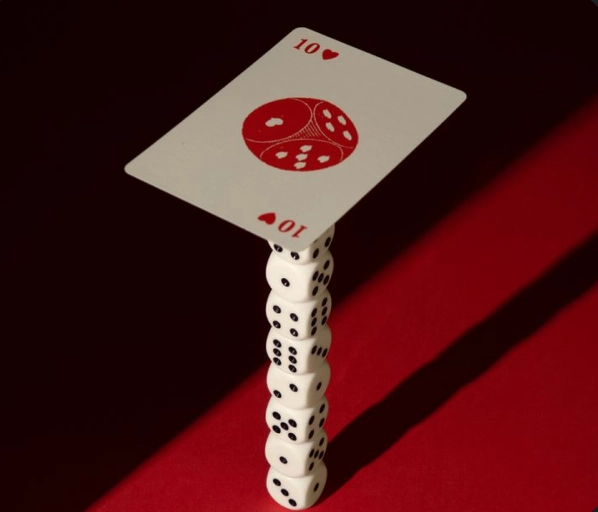
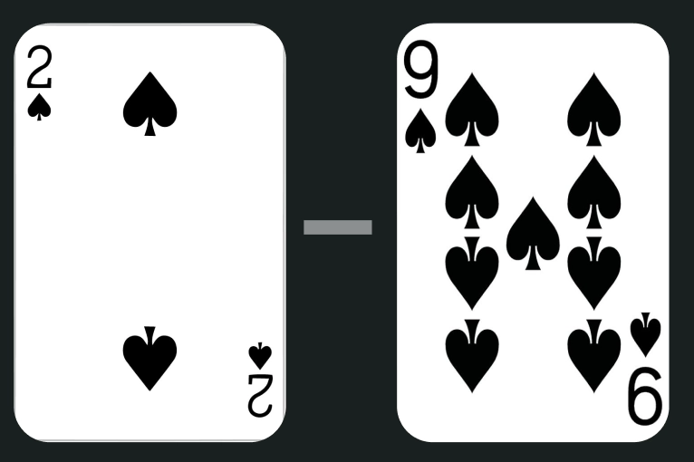
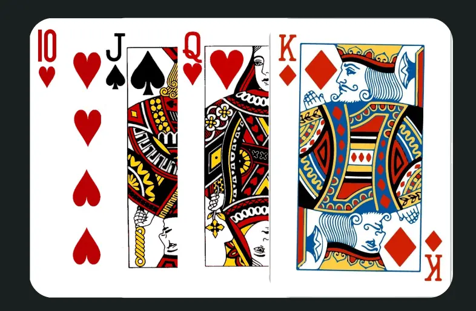
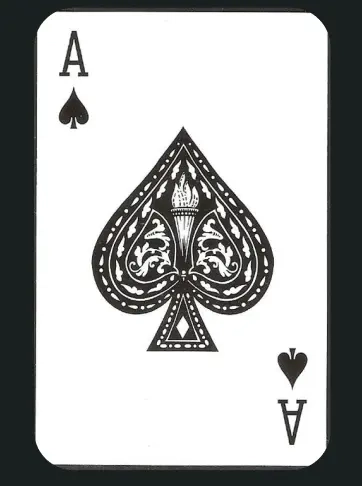
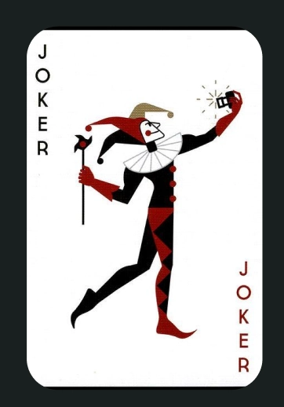
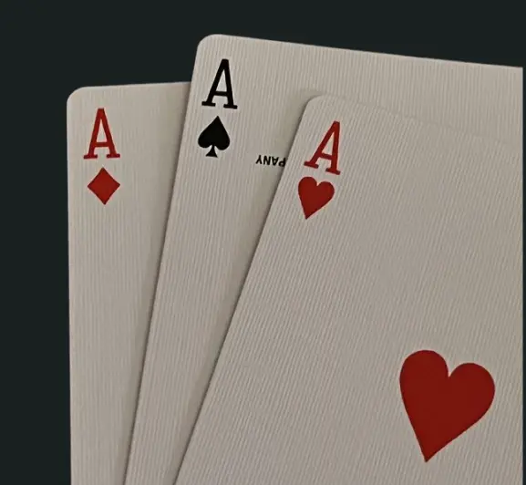

500
500 er et klassisk dansk kortspil for 2 eller flere spillere. Hvor det handler om at tage stik, få point og være den første til 500 point.
2 eller flere spillere
Spilles med 2 eller flere spillere
Spilletid
30-60 min.
Sværhedsgrad
Mellem
Kort
Almindeligt spil med 54-56 kort (med jokere)
Kort om spillet
“500” er et populært og underholdende kortspil, som også omtales “Rummy”. Spillet foregår imellem 2 eller flere personer, og som titelnavnet antyder, gælder det om at nå femhundrede point. Det er et enkelt og sjovt spil, som både kan spilles i familien, kollegagruppen og vennekredsen.
Sådan spilles 500
Kortspillet 500 spilles mellem minimum 2 deltagere. Der skal bruges ét sæt spillekort inkl. jokere til hvert spil. Der skal være 2-3 jokere i kortsættet.
Når i skal spille “500”, er det en god idé at have et papir og en kuglepen eller notesbogen klar, så i løbende kan holde styr på jeres point fra hver runde.
I får mest ud af kortspillet, når alle deltagere kender formålet og regelsættet.
Børn på 10-12 år og opefter vil kunne deltage i spillet på egen hånd, når alle har kendskab til reglerne

Regler
Reglerne er som følgende:
- Kortene blandes og fordeles tilfældigt med 7 kort til hver spiller.
- Kortbunken placeres på bordet mellem alle spillere, og det øverste kort vendes med billedsiden opad.
- Der må ikke lægges stik i begyndelsen af en runde, og spillet må ikke lukkes i forbindelse med en spillers første tur. Hver spiller skal have haft en tur med at trække kort, førend de første stik på placeres på bordet.
- Hver spiller har 3 muligheder, når det er vedkommendes tur. Vedkommende kan enten tage det øverste kort fra bunken med billedsiden nedad, tage det øverste kort fra bunken med billedsiden opad, eller vedkommende kan tage hele bunken med billedsiden opad (Spilleren der trækker hele bunken skal kunne lægge ét stik af mindst 3 kort, 50 strafpoint hvis ikke).
- Hvert stik skal bestå af minimum 3 kort. Her skal der vælges kort, som ligger i kronologisk rækkefølge og er af samme korttype (det kan f.eks. være hjerte 4, 5 og 6)
- Når hver spiller lægger et stik på bordet, skal stikket være synligt for alle spillere.
- Des længere en runde varer, des mere udfordrende og sjovt bliver spillet. Når alle spillere har trukket et kort op i løbet af den første tur, må der lægges stik på bordet.
- Herefter er det tilladt for hver spiller at lægge supplerende kort på sin del af bordet. Det kan være enkeltstående kort, som kan lægges til et eksisterende stik fra en anden spiller.
- Jokerne har stor værdi i kortspillet 500. De kan bruges til at danne kreative stik med, hvis en spiller mangler det tredje kort for at kunne lægge et stik på bordet.
- Når der bruges en joker til at lægge stik, skal spilleren fortælle de andre, hvad jokeren ligger for.
- Hvis en af de andre deltagere ligger inde med det originale kort, som jokeren er en erstatning for, må den spiller tage jokeren til sig og lægge det originale kort til stikket.
- En joker kan gælde for ethvert kort.
- Alle ens stik og kort der lægges til, skal placeres på bordet ud for ens plads, så det er nemt at kunne tælle point efter hver runde.
- En runde afsluttes eller lukkes, når én af spillerne ikke har flere kort på sin hånd.
Kortenes værdi

5
point

10
point

15
point

25
point
Point og vinder
Den første spiller der når 500 point, vinder spillet. Den spiller med færrest point har tabt.

Gode tips
Bliv bedre til 500 med disse enkle råd.
Hold styr på, hvad der bliver smidt i bunken.
Hold på dine jokere, så lang tid som muligt, men pas på det ikke er for tæt på luk.
Saboter de andre med at lukke tidligt!